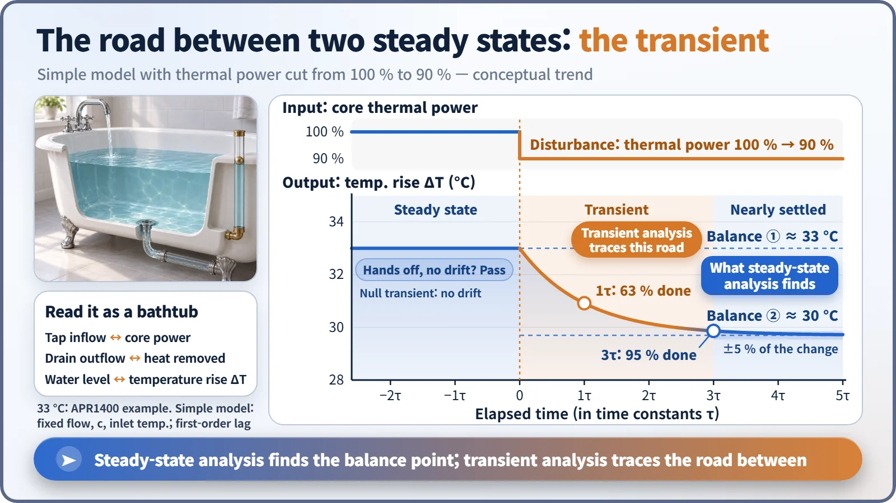
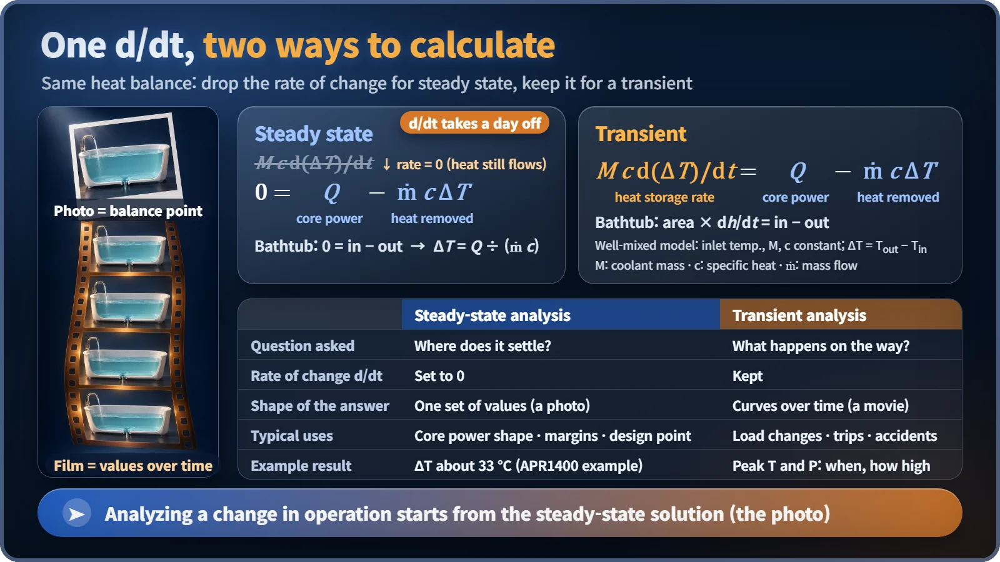

Modeling, Simulation & Computation · 259
When Does the Bathwater Stop Rising? — Steady-State and Transient Analysis
One asks where the system settles, the other what happens on the way. A photograph and a movie, and the movie starts from the photograph.
Steady-state analysis sets the rate of change to zero and asks where a system settles; transient analysis keeps the rate of change and follows what happens on the way. One is a photograph, the other a movie, and the movie almost always starts from the photograph.
A half-plugged bathtub
Fill a bathtub with the plug half in. Once the water from the tap exactly matches the water going down the drain, the level stops and stays put, even though water is pouring in and out the whole time.
Turn the tap up and the level rises, but not forever: deeper water pushes harder through the drain, and at some height inflow and outflow match again. Two questions follow. Where does the level finally stop? And what happens on the way; could it spill over the rim first? The first is answered by steady-state analysis, the second by transient analysis.
It looks still, but it never stops flowing
In a steady state, values such as temperature, pressure, flow and power don't change over time. That does not mean nothing moves. In a reactor, heat keeps being produced and the coolant keeps carrying it away; what comes in exactly matches what goes out, so the net change is zero.
South Korea's newer APR1400 design produces about 3,983 megawatts of heat in its core. Coolant enters at about 291 °C and leaves at about 324 °C, so it stays warmed by about 33 degrees: heat made by the core and heat carried off by the coolant balance exactly. Finding the values at that balance point in one go is steady-state analysis. [1]

One little d/dt splits two methods
For the bathtub: tub area × (rate of change of the level) = water in − water out. The rate of change over time is written d/dt. For reactor coolant the same shape reads: heat capacity of the coolant × rate of change of temperature = core thermal power − heat carried away by the coolant.
| Steady-state analysis | Transient analysis | |
|---|---|---|
| Question | Where does it settle? | What happens on the way? |
| The d/dt term | Set to zero | Kept |
| Shape of the answer | One set of numbers (a photograph) | Curves over time, built step by step (a movie) |
| Typical uses | Core power distribution, thermal margins, design points | Load changes, trips, postulated accidents |
In a simple calculation with flow and inlet temperature held fixed, cutting thermal power from 100% to 90% lets steady-state analysis report only the destination: the temperature rise shrinks from 33 to about 30 degrees. Real plants adjust temperatures through their control systems, so the number is only an illustration, but only transient analysis shows how the curve bends its way down in between.

The transient starts on top of a steady state
The two calculations aren't rivals. To follow a change in an operating plant, transient analysis uses the steady-state solution as its initial condition: the pre-disturbance state must be pinned down before what follows can be trusted.
So before applying any disturbance, analysts run the transient calculation for a while with nothing changed, a null transient. If values creep although nothing was touched, the model, not the plant, hasn't found its balance yet. System analysis codes sometimes find the steady state exactly this way, running the transient equations undisturbed until the rates of change approach zero. [2]
The destination and the road
Steady-state analysis is the workhorse of design: where power concentrates in the core, how much margin the fuel has to its thermal limits at rated power, what coolant flow and temperatures to choose.
Transient analysis takes over after something changes: load changes, a turbine or pump stopping, postulated accidents for safety evaluation. Here what matters is less the destination than the highest point along the road. Even if the final level is below the rim, the water can slosh over on the way up; whether temperature or pressure briefly crosses a limit can only be known by following the curve.
One easily confused name
"Steady-state analysis is for normal operation, transient analysis for accidents." No. Normal and abnormal operation describe the plant's condition; steady-state and transient analysis describe how you calculate. A planned power reduction is a transient analysis subject, and the stable state reached after an accident may be calculated as a steady state.
"A new steady state means returning to the old one." Not necessarily. If the inputs have changed, the system settles at a different level.
Key takeaways
Steady-state analysis sets the rate of change to zero and finds where it stops; transient analysis keeps it and follows what happens on the way. The curve your bathwater traces as it rises, slows and stops is the very curve plant designers calculate every day.